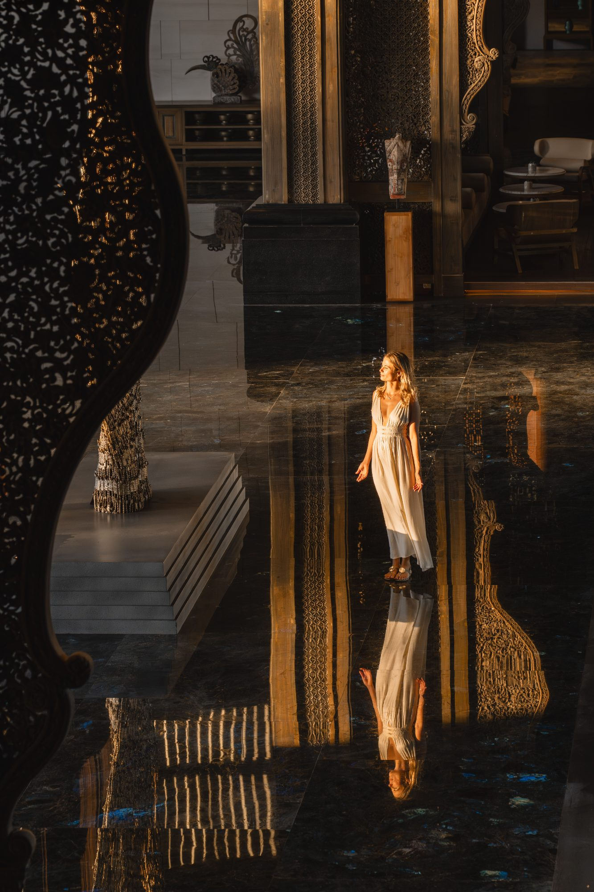
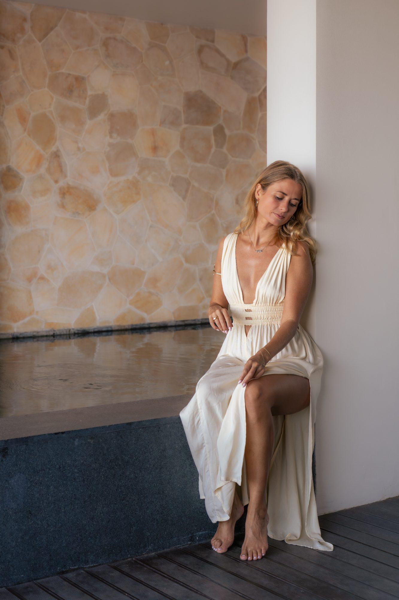
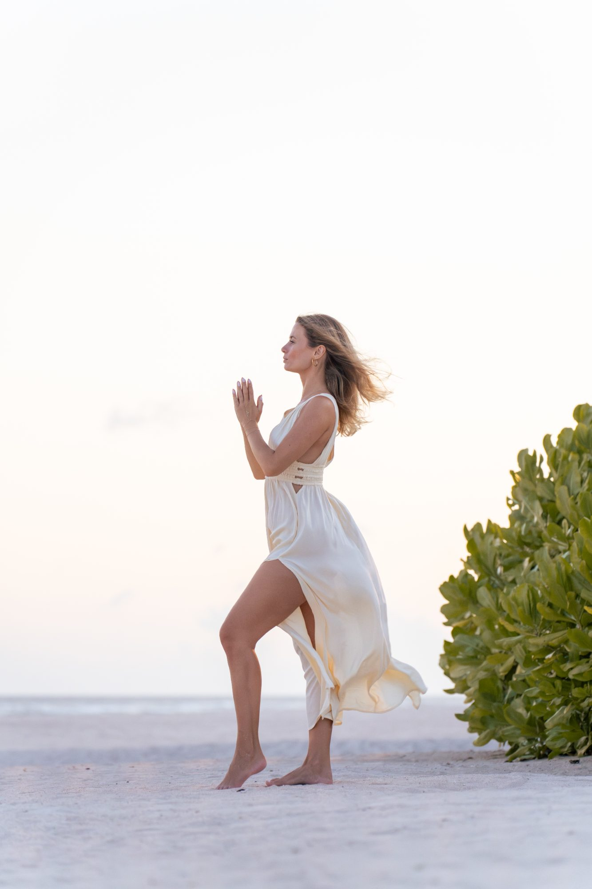
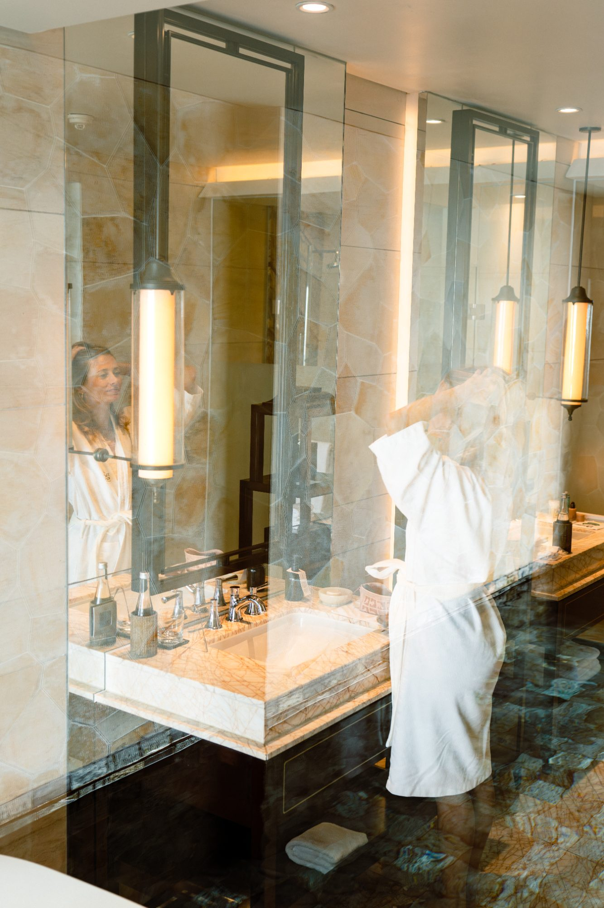

You don't need another course teaching you how to manifest. You need to transform the identity underneath the patterns that keep recreating your current reality.

You are not broken and you are not ungrateful. You are accomplished, disciplined, already deep in the inner work, and you know, quietly and completely, that you want so much more than this.
There is nothing to complain about, and still something in you says: this cannot be it. Some days it feels less like gratitude and more like being stuck in a hole you never dug.
You achieve because you are disciplined, smart and relentless. It works, and it drains you. You want to arrive at the same place carried by momentum instead of sheer willpower.
You grew up hearing “we can't afford that” and “there was never enough”. Now you fear lack and success at the same time, and somewhere you believe a lot of money would leave you alone.
Someone buys you lunch and you instantly need to give something back. Receiving only feels safe once you have earned it, and rest reads as falling behind.
You meditate, visualise, journal, read, tap, breathe, and you have done programmes before. They got you moving, but never deep enough to change what actually runs your day.
you are done standing still, you are willing to look at the identity underneath your results, and you want the next chapter to feel lighter than the last one, not harder.
you are collecting techniques rather than willing to change the identity underneath them, you want someone else to do the work for you, or you need medical or psychological care, this work sits alongside that, never instead of it.
You already know how to visualise. You've journaled. You've tried affirmations. You've set intentions. You've worked on yourself.
By now you've probably also heard that you have to change your identity and rewire your subconscious. And you tried that too, and it still didn't stick. That is the part almost nobody explains.

Every manifestation coach now says: rewire your subconscious, change your identity. Almost none of them explain why it didn't work when you tried. Here is what I see, every single time.
You listened to the audios, and then talked to yourself all day exactly as before. Three of my closest friends are brilliant coaches. All three were certain they were feeling through their emotions. When I walked them through it properly, all three said the same thing: oh, I never actually did this.
I asked myself how I saw myself, and the answer was “an impactful coach”. My goal needed a magnetic movement leader and seven-figure entrepreneur. That gap explained everything. A yoga teacher and creator takes completely different actions than a great yoga teacher and entrepreneur. An artist takes different actions than a really good artist. Most women have never made that distinction for themselves.
You move three steps forward and something pushes you back. That something is a belief held tight to the old identity: it's not possible for me, I have to do it all alone, if I had a lot of money I'd end up alone. Until those are rewired, the elastic always wins.
When you are still full of lower emotions, there is no capacity in your body for joy, gratitude or ease, no matter how well you visualise. We make space first by releasing what is stored, and only then can the higher states become your normal.
Beliefs come back. The old identity creeps in on a hard day, when you're sick, when you're tired, and most women read that as proof they failed. It isn't. It's the moment to notice and choose again. You become the security guard of your own mind, daily.
Your thoughts, beliefs, emotional patterns and expectations are downstream of it. Change the identity you create from, and the reality follows.
Exactly what we do inside the twelve weeks, in the order that makes it stick.
First we separate soul desires from ego desires and conditioning, because the desires that are genuinely yours are the ones the universe seems to conspire for. Then we name two things out loud: the identity you live from today, and the identity your desire actually requires. That gap is where your whole reality is decided.
We find the limiting and competing beliefs holding you tight to the old identity and rewire them. We release stored emotions so there is space in your body for the higher states. And we do it with access to the subconscious, hypnosis, guided reprogramming and visualisation work in the brainwave states where those patterns actually live.
This is where most programmes stop and where the real work begins: your self-talk, how you meet a trigger, the perspective you choose, the routines that hold you, and the aligned actions you take instead of a long to-do list. When the old identity creeps in, and she will, you notice it and choose again, instead of calling it failure.
We expand what feels normal, safe and available to you, so abundance, love, support and opportunity can land without sabotage, guilt or the need to earn it first. This is the part that turns hard-won results into results that arrive with ease instead of force.
This is not four separate methods. It is why the work holds: we change the identity on every layer that reinforces it.
Limiting and competing beliefs, interpretations, expectations, and the way you speak to yourself all day.
Feeling through what was never felt, so there is capacity for the frequencies you want to live in.
The people, environments and obligations quietly pulling your energy back to the old normal.
What you do daily: rituals, standards, decisions, and the aligned actions she would actually take.

Abundance, love, health and freedom are not four separate projects. We change the identity underneath all of them, and then apply it, area by area, to your life.
Clients who come to you through word of mouth instead of the grind of marketing, at prices you set freely. Income that stops leaking at the level your nervous system finds familiar.
Out of permanent performance mode into balance, rest and lightness, without reading rest as falling behind. Decisions made from desire instead of fear. Time for yourself without the guilt.
A partnership built on mutual appreciation, and a handful of people you can be a hundred percent yourself with. No more adapting, carrying, or making yourself small to keep the connection.
Listening to what your body asks for and acting on it, with routines that hold. Identity work supports this; it never replaces your doctor or therapist.
The end of “I am not good enough, no matter how much I achieve”. You stop proving, stop pleasing, and say no to what doesn't belong in your life, the same day, not months later.
The same four steps, in order, with time to let each one land.
We separate authentic desire from conditioning and fear, and name both identities out loud: the one you live from today and the one your desire requires.
Work through the beliefs and stored emotions tied to receiving more: the patterns that keep pulling you back, and make space for the states you want to live in.
You deliberately practise the beliefs, self-talk, standards and decisions of the new identity, with subconscious reprogramming running underneath it.
Your capacity to receive expands, and the work integrates into ordinary life: aligned action, rituals that hold, and the awareness to catch the old identity and choose again after week twelve.
The exact process I would follow with only twenty minutes a day: what to do, what not to do, and what is simply wasting your time.
Release the subconscious patterns that make you feel you have to earn your worth before you are allowed to receive.
How to keep manifesting while you are still healing, growing and evolving, because life is happening right now.
Release the hidden fears that stop you from fully receiving what you have been asking for. Sometimes the block is capacity, not desire.
Uncover the desires that are genuinely aligned with you, not the goals society gave you or the ones your family expects.
Let go of control and trust yourself, your vision and the path unfolding, because what you desire often arrives in unexpected ways.
I did not study this work from a distance. I lived a defining moment that changed how I choose to live, and I rebuilt my life from a different identity, most recently by naming out loud that I was still showing up as an impactful coach while my desire required a movement leader.
For five years now I have done this work full time and guided more than 800 clients through their own version of it, with a 4.98 out of 5 rating on ProvenExpert. Not with better affirmations. With the layer underneath.
Not end-of-programme testimonials. These are things they reported on the weekly calls, while it was happening.
The reviews below are verified ratings of Nathalie's coaching, collected independently on ProvenExpert.

Because we start by finding out what was missing: usually the self-talk was never changed, the emotions were never truly felt through, or the current identity was never named. We work on all four layers: mental, emotional, energetic and physical, instead of one.
One live call, plus daily practices measured in minutes. The work is designed to run through your ordinary day rather than on top of it.
She will, on a hard day, when you're tired, when you're sick. That is not failure, it is the moment the work actually happens: you notice it and you choose again. You'll learn exactly how.
No. This is coaching and identity work, and it sits alongside, never instead of, medical or psychological care. If something heavier is present, we work gently and within those limits.
A small group of nine women, with twelve live calls and direct access between them. The group is part of the mechanism: it raises what feels normal faster than working alone.